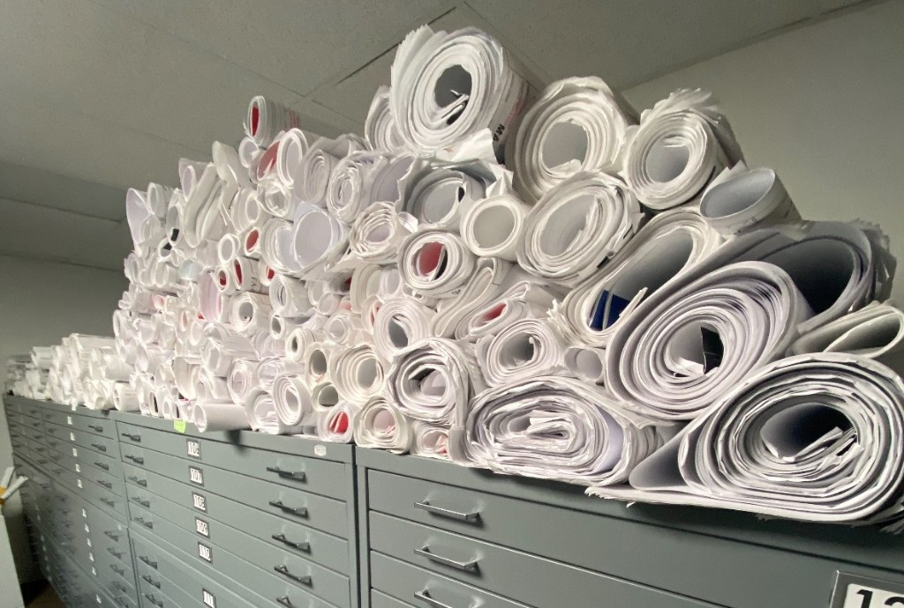
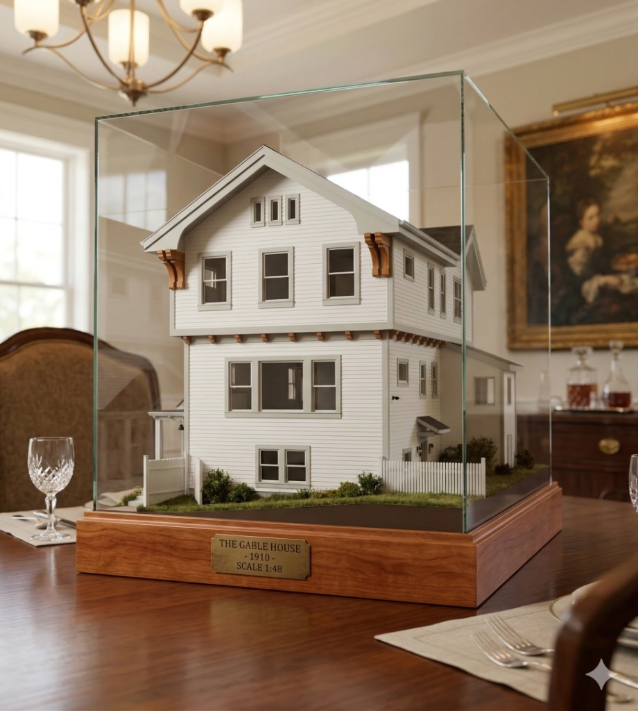
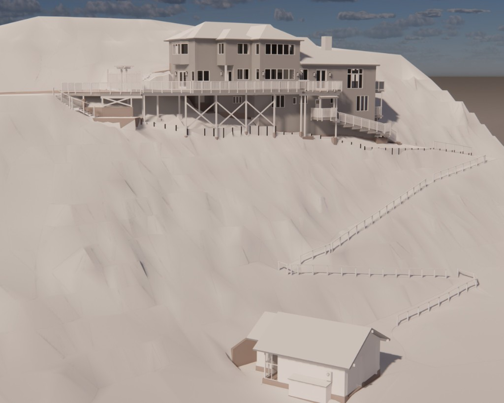
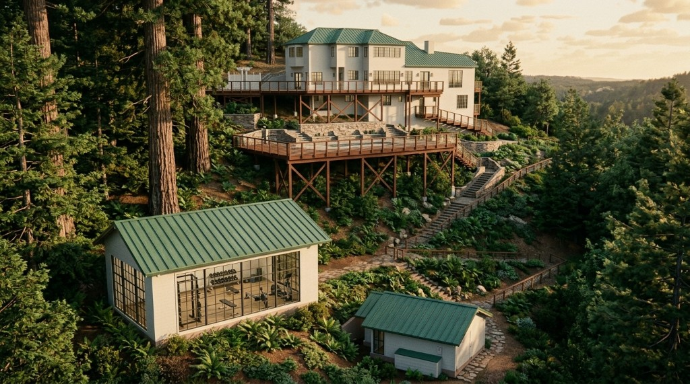

3D Models Take a Little More Time But Add A LOT of Value
BIM, Building Information Modeling, is CAD,Computer Aided Design, on steroids. CAD models are the digital equivalent of old school blueprints: line drawings of floor plans, exterior elevations, section cuts through the building and details, the drawings delivered in large rolls of paper and reviewed on dining room tables and temporary plywood standup desks on construction sites.

BIM models are all of that and more. The core of a CAD model are 2 dimensional digital “drawings”. While a BIM model can easily generate the same 2D plans by cutting thin “slices” through the model, a BIM model is more like the wooden or cardboard models that architects used to make for clients to walk around, show their friends and display under glass in their offices.

Commercial and industrial architects first embraced BIM for its first “super power”. BIM models are not built of just lines and planes but are assembled from “objects”. A window is not just rectangles and lines but can have information associated with them. This information begins with the basics: sill height, head height, glass divisions… But can go much farther. Some window objects have manufacturer, model number, cost, thermal efficiency and more. Very sophisticated users take all of this information and use the model to do quick estimations, traffic flow analysis and thermal efficiency studies. While the potential power of “fully annotated” BIM is impressive, a new, lower effort use of BIM models is emerging; very rapid design evaluation and creative idea generation using AI tools.
More about 3D visualization and ideation


Basic BIM modeling, based on LiDAR scans and 360° photographs, now takes just a little longer than CAD modeling. The level of BIM modeling that we typically provide is known as Level of Detail 200 (LOD200). Industry associations have established the LOD standards relating to how fine elements in the model are detailed, and how much information is associated with objects (like windows), in the model.
Ground Truth customers are typically at the beginning of the process of changing a building. They need to know: where are the walls, ceilings, doors and windows? How big are the rooms? What are the materials? Where are the structural beams and posts? Since the model is used as the basis for purchase decisions or design planning, spending time and money fully detailing the model is not necessary and will most likely be done by the architect, designer or contractor. LOD 200 models are accurate but simplified and work as the perfect foundation for what comes next.